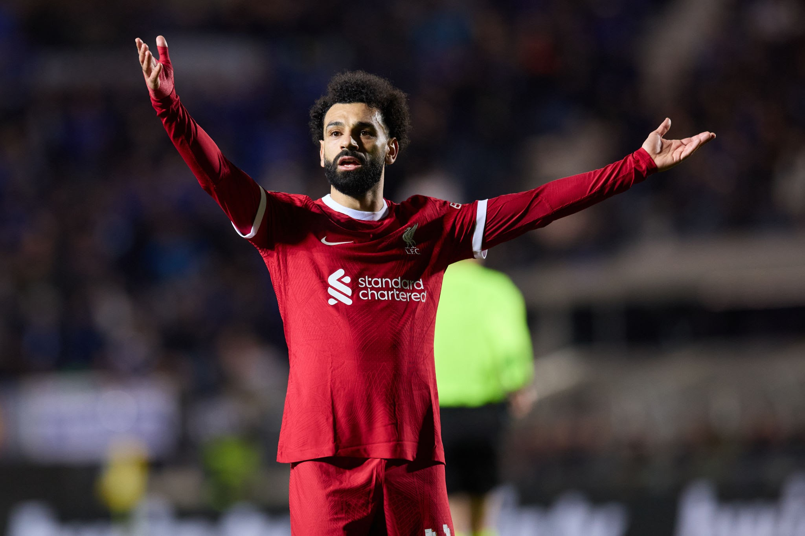

Name : mohmed salah hamed Mahrous Ghaly
Age : 32 Years old
Birth and Early life :Mohamed Salah was born on June 15, 1992, in Nagrig, Egypt.
Club Career :
- Salah started his professional career with El Mokawloon in Egypt before moving to Basel in Switzerland in 2012.
- He gained prominence at Basel and then moved to Chelsea in the Premier League in 2014, although he didn't immediately settle.
- After a successful loan spell at Fiorentina and then Roma in Italy, Salah joined Liverpool in 2017.
Liverpool FC :Salah's time at Liverpool has been incredibly successful:
- He has been instrumental in Liverpool's resurgence under manager Jurgen Klopp, helping the club win several major trophies.
- Salah was the Premier League's top scorer in the 2017-18 season.
- He was a key player in Liverpool's UEFA Champions League triumph in 2019 and their Premier League title win in 2020.
- Known for his pace, dribbling ability, and goal-scoring prowess, Salah has broken numerous records at Liverpool.
International Career :
- Salah has been a key figure for the Egyptian national team since making his debut in 2011.
- He has represented Egypt in multiple African Cup of Nations tournaments and FIFA World Cup competitions.
Personal Accolades :
- Salah has received numerous individual accolades, including being named African Footballer of the Year multiple times.
- He has also been included in the PFA Team of the Year and has won the Premier League Golden Boot.
Personal Life
- Salah is known for his humility and philanthropic efforts. He has been involved in charitable activities in Egypt and beyond.
Mohamed Salah's combination of skill, speed, and humility has made him not only a star on the football field but also a role model for many aspiring athletes worldwide.